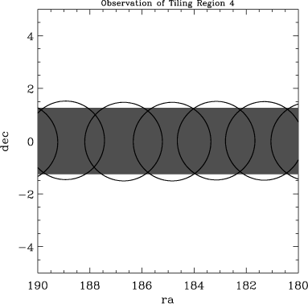
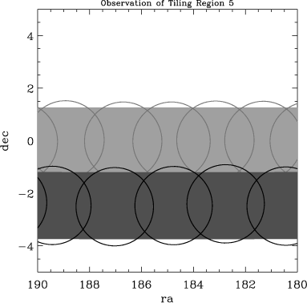
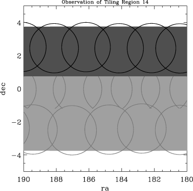
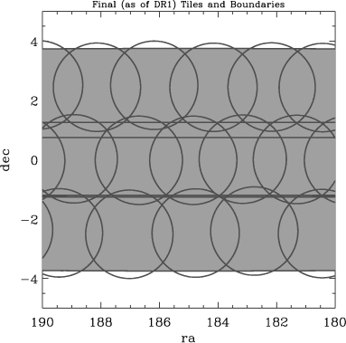
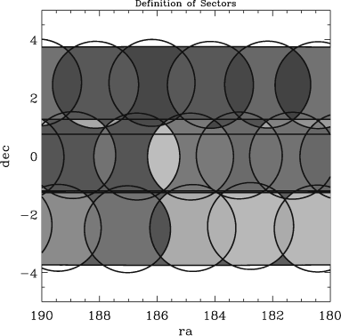

Tiling: determining survey completeness
Up: Data Products Sections: Images - Object lists - Spectra - Tiling
When you are given a set of spectra from any survey, and you want to
ask statistical questions about them, the first thing you should ask
is "How were these objects selected?" The SDSS is designed such that
you can answer this question easily for the tilable targets
(for the most part QSOs, Main Sample galaxies, and Luminous Red
Galaxies). The answer has
several steps:
- Photometric detection (requires understanding the photometric imaging mask)
- Target selection (requires understanding the target selection
algorithms)
- Tiling (the algorithm is described in a separate document)
- Spectroscopic completeness (whether or not
a spectrum successfully yields a classification)
This section addresses the second and third aspects: how tilable targets
are selected and assigned to each tile.
The way to understand the tiling window is as follows. In each
direction of the sky we can ask two questions:
- what version of the
target algorithm was used in this direction (for example,
to determine the flux limit in the targeted data)?
- what set of tiles had the opportunity to put a fiber on a target
in this direction?
Once you can answer these two questions, one can define a complete
spectroscopic sample from the SDSS.
The second question, in detail, is not the same as asking whether the
direction in question is within 1.49 deg of the tile center in
question. This is because tiles near edges of tiling regions (that
is, virtually all tiles) extend beyond the tiling region area. In some
cases, the survey then later observed and targeted
the adjacent area. This fact, and the generally complex geometry which results
from the survey configuration, make the expression of the window
function nontrivial.
In practice, we have solved these geometric problems and with the data
release are giving you tools to answer these two questions.
To demonstrate the SDSS procedure, consider the following few figures,
which represent how targets were selected and tiles defined along a
section of the SDSS near the Northern Celestial Equator. The region
shown was successively targeted in Tile Region 4, Tile Region 5 and
Tile Region 14. The images show:

- The area targeted (in dark grey) by Tile Region 4 and the boundaries
of the defined tiles.

- The area targeted (in dark grey) by Tile Region 5 and the boundaries
of the defined tiles, plus (in lighter tones) the geometry of Tile
Region 4. Note that there exist areas in Tile Region 5 which are
within the boundaries of tiles from Tile Region 4; however, those old
tiles could not have been assigned targets in Tile Region 5.

- The area targeted (in dark grey) by Tile Region 14 and the boundaries
of the defined tiles, plus (in lighter tones) the geometry of Tile
Regions 4 and 5. The same issue of overlapping tiles exists in this
case.

- The full area covered by the targeting and all of the relevant
Tile Region and tile boundaries. One can divide this region into
all the disjoint polygons defined by these boundaries (for example
using Andrew
Hamilton's Mangle software).

- One can ask for each disjoint polygon what tiles cover it. A
unique set of tiles covering any area of sky is known as a "sector" or
sometimes "overlap region." The last figure colors shows the same set
of disjoint polygons but colors each one according to its sector. Note
that sectors can consist of more than one polygon.
Since the SDSS is so complete, the details of exactly which set of
tiles covered any given region would not be important, except that in
certain cases there are resulting gaps, which are important to track.
The Catalog Archive
Server provides all tiling information needed to interpret the
details of the above geometry.
The tiling window describes only how tiling treated the geometry for the
relevant set of data released here. It does not account for decisions
about the photometric window released here or for fields identified as
bad since the era of targeting.
So in addition to the tiling window, one needs to also account for:
- the fact that targets 100 arcsec from the tile center are excluded
- the photometric window (including bad fields) of the data release
- which tiles had corresponding plates released
This information can be acquired elsewhere in this data release
documentation, as referenced at the beginning of this page.
Last modified: Thu Mar 4 20:38:21 CST 2004